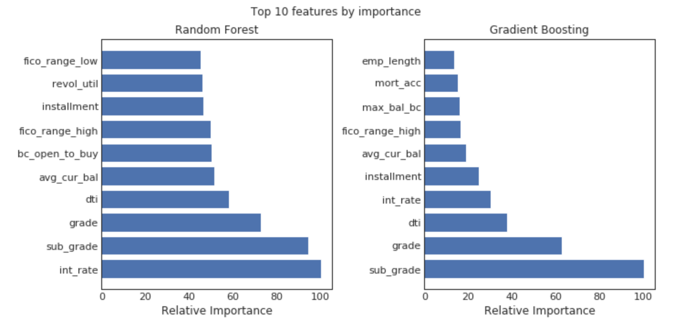

Please notice, that additional details on modelling can be found here.
After reading in the data and doing some additional cleaning (removing columns) and preparing the data for modelling (e.g. encoding binary columns, stripping xx from zip codes, etc) and adjusting the data for skewed variables, we split the data into a training and test data set.
In the initial data set our target variable loan_status was fairly unbalanced (about 3/4 of the data was "fully paid" and only 1/4 "charged off"). This would've caused misleading assessment of model performance. We therefore resampled the classes to achieve balanced classes in the training set. For the initial stages, we also took the opportunity to reduce the dataset size in the initial stages, so that different model specifications could be tested faster.
Since we will be using models that are sensitive to scale, we need to scale the data as well. The unscaled features interest_rate and earliest_cr_line are extracted for use in later custom metrics.
We did another quick look at the data and can now see that some southern states have higher charge off rates than the rest of the states.
We explored several performance metrics to be used in our project. Since the cost of a false positive is relatively high, this needs to be accounted for when choosing the best model, while still aiming for a good overall performance. For the purposes of this project, we consider several metrics:
For tuning the hyperparameters, the primary metric we used for refitting was AUC. However, other metrics were also used to check overall performance in the visual analysis using graphs. The section below shows a subset of the models and performance metric graphs that were investigated in the project.
We then tried to develop a process to search through a grid of tuning parameters using some wrapper functions shown in the notebook and return the best models. After comparing the models, we noticed that the different classifiers do not perform that differently (at least for the parameters tried so far).
A comparison of the feature importance for the random forest and gradient boosting shows that they are selecting similar features in the top 10, although with slightly different weights/ordering.
If an investor were to decide to invest their money in LendigClub, some of the most important features to consider when doing so, would be variables like the ones below, which resulted from running for example a random forest and gradient boosting calculation and looking at the relative importance of the features:

Those features will become the underlying characteristics that drive the investment strategy, which can be found on our conclusions page.